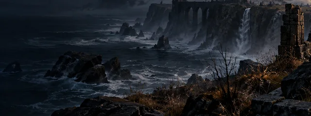
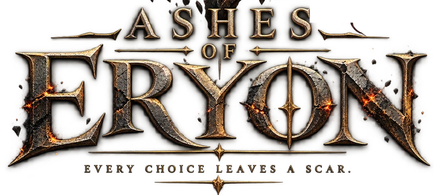
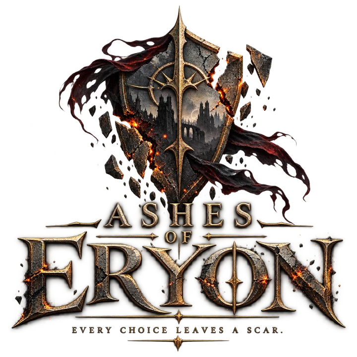
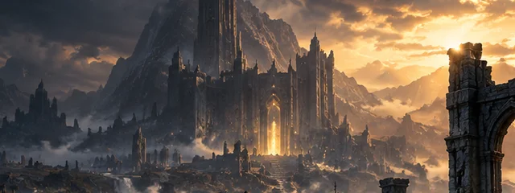
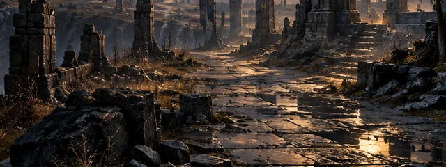

Nekonečný svět Eryonu
Objev rozlehlé oblasti, tajemství minulosti a místa, která ještě nikdo neprozkoumal.


Probouzíš se na Bezejmenném břehu.
Kalidra je v troskách a jméno Eryon
rozděluje celý kontinent.

Objev rozlehlé oblasti, tajemství minulosti a místa, která ještě nikdo neprozkoumal.

Příběh největšího města kontinentu a události, které navždy změnily osud Eryonu.

Vylepšená stabilita, rychlejší stahování a několik užitečných funkcí.